Aquí tenemos la ultima técnica de base que un debutante debe dominar : La torcedura del tulipán, o « tulip-twist » en ingles, a veces llamado burbuja manzana, o « apple-twist » en ingles, debido a su forma.
Utilizaremos esta técnica con bastante rapidez, en un próximo tutoriel : como hacer una flor con globos. También puede ser utilizada para hacer una rueda de coche, etc.
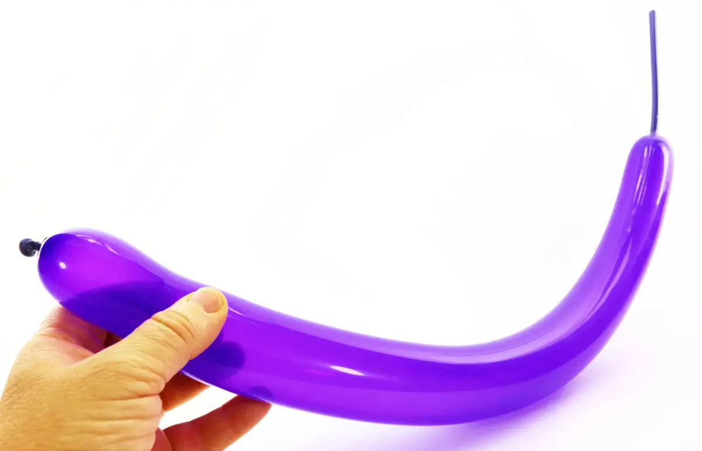1- Para practicar, inflar un globo, no importa la longitud.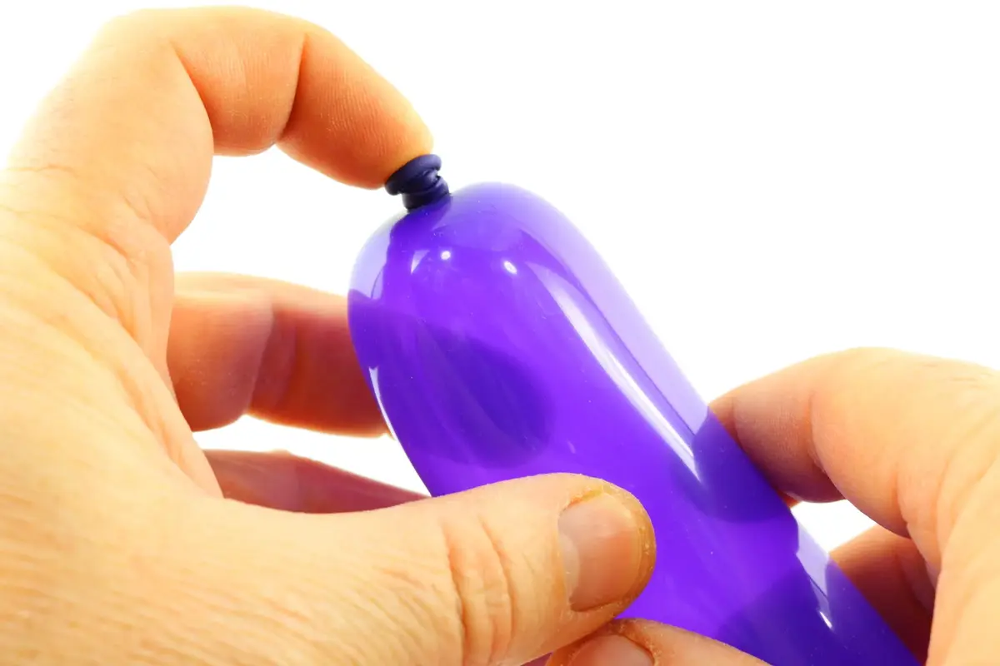2- Posicionar el indice de la mano de manipulación en el nudo del globo.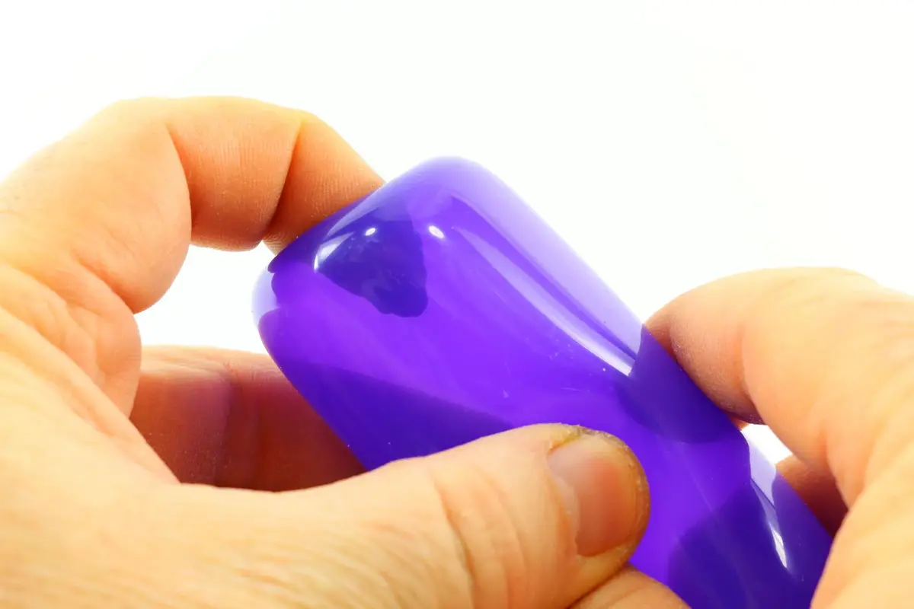3- Presionar en el nudo para hundirlo a dentro del globo.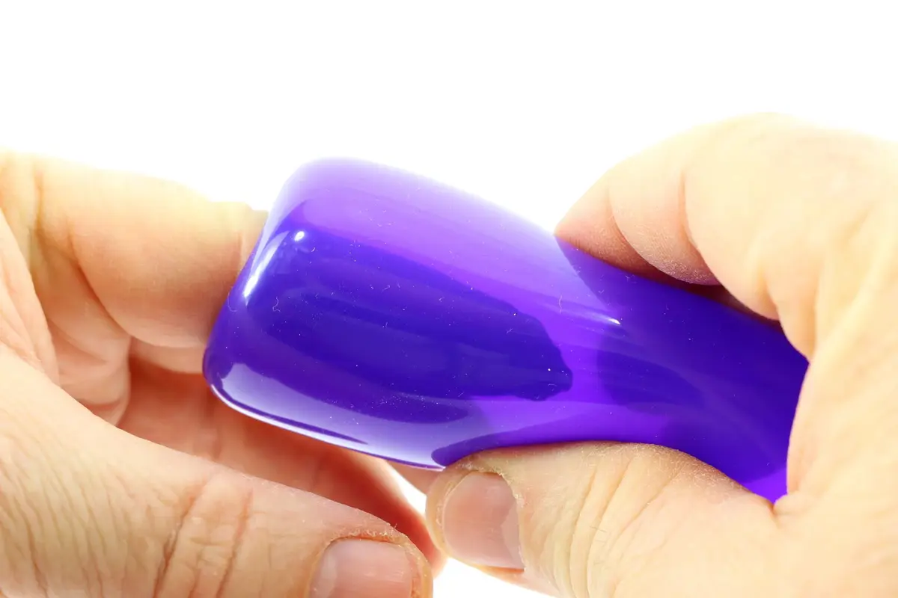4- Hundir el dedo bastante profundamente para que el nudo (a dentro del globo) se encuentra al nivel del pulgar y del indice de la mano de mantenimiento (por fuera del globo).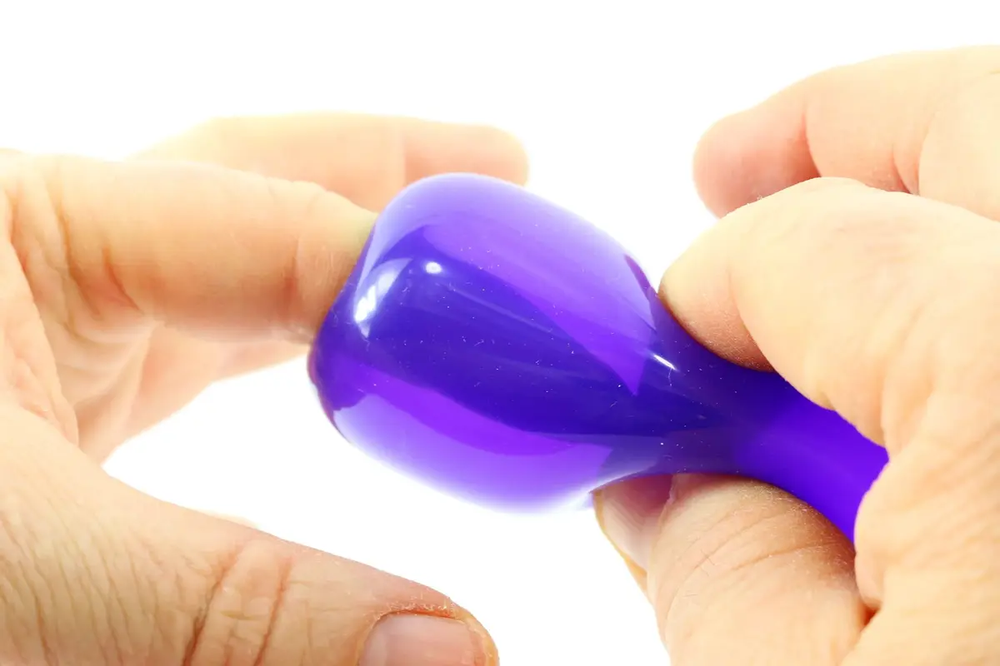5- A través de la pared del globo, agarrar el nudo con la ayuda del pulgar y del indice de la mano de mantenimiento, y cogerlo con firmeza.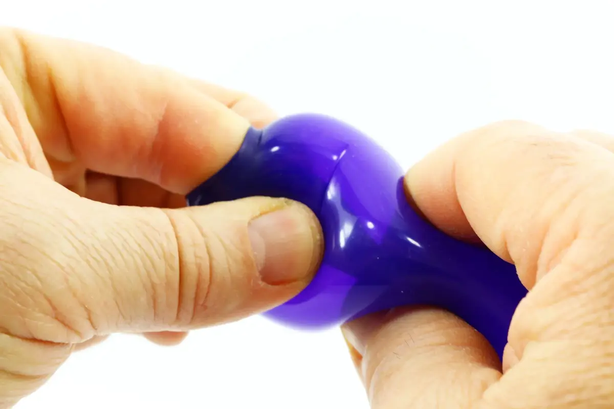6- Mientras manteniendo con firmeza el nudo a dentro del globo, quitar poco a poco el indice de la mano de manipulación, si necesario con ayuda del pulgar y del dedo medio de la misma mano (o cualquier otro dedo disponible) para aliviar la presión del aire que rodea el indice enredado en el globo.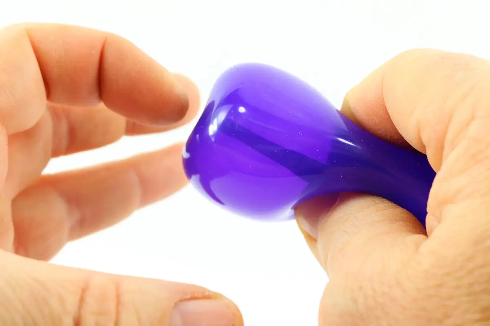7- Esta manipulación debe ser efectuada poco a poco con mucho tacto (lo puedes llamar así) con el fin de poder extirpar el dedo del globo sin que explote.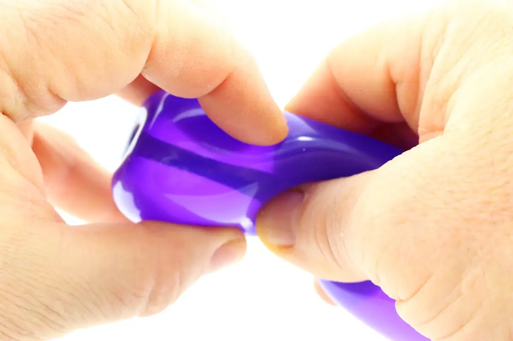8- Con ayuda de la mano de manipulación, presionar contra el globo, todavía bloqueado a través de la pared del globo por la mano de mantenimiento.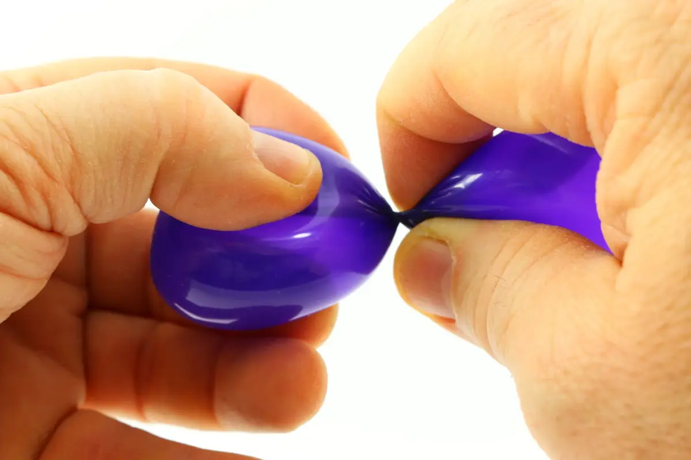9- Presionar… y girar con el fin de formar una burbuja que excluirá el nudo en el segmento quedando del globo.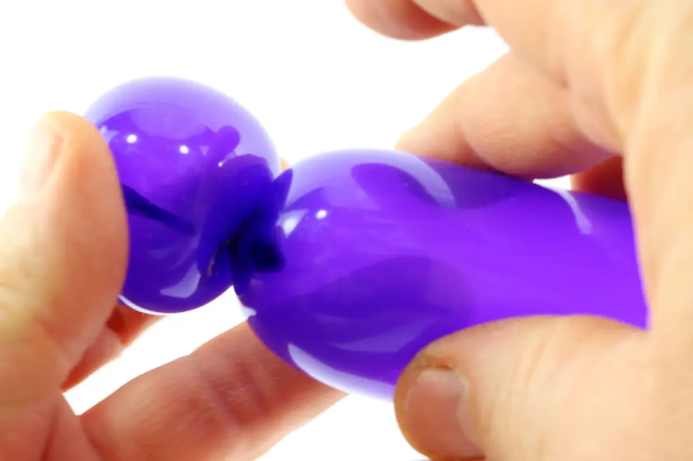10- En transparencia, podemos distinguir el nudo atascado a dentro de la burbuja tulipán. Si bloqueamos otra pieza de globo (pétalos de flor por ejemplo) en el doblez formado entre la burbuja tulipán y el segmento quedando del globo, la torcedura del tulipán sera asegurada y no hay riesgo que se deshaga.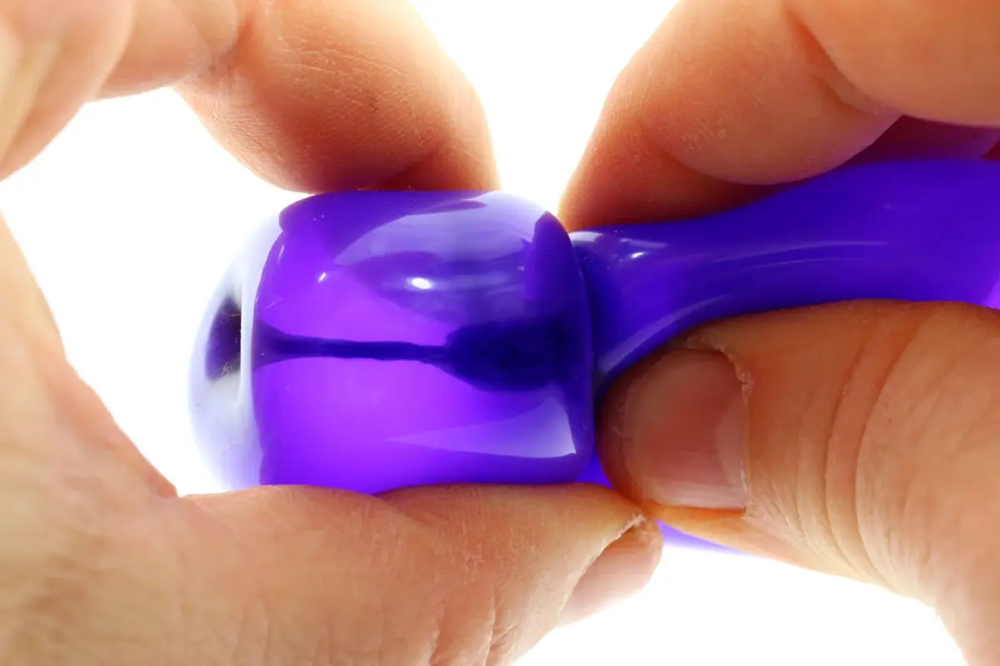11- Si no se prevea utilizar otro pedazo de globo para asegurar el doblez, habrá que echar el nudo poco a poco a dentro de la burbuja tulipán mientras girándola sobre si misma.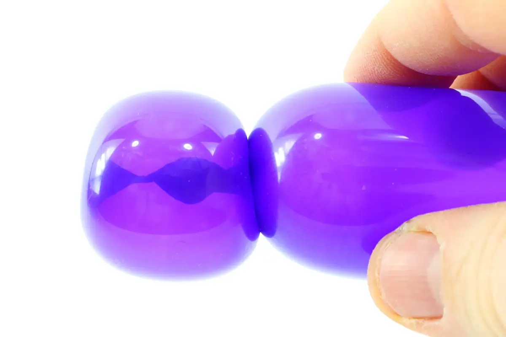12- En transparencia, distinguimos bien el nudo atascado y asegurado al medio de la burbuja tulipán.13- ¡Aquí tenemos nuestra torcedura de tulipán acabada! ¡Hasta pronto, para otra lección... con Môssieur Ballon!